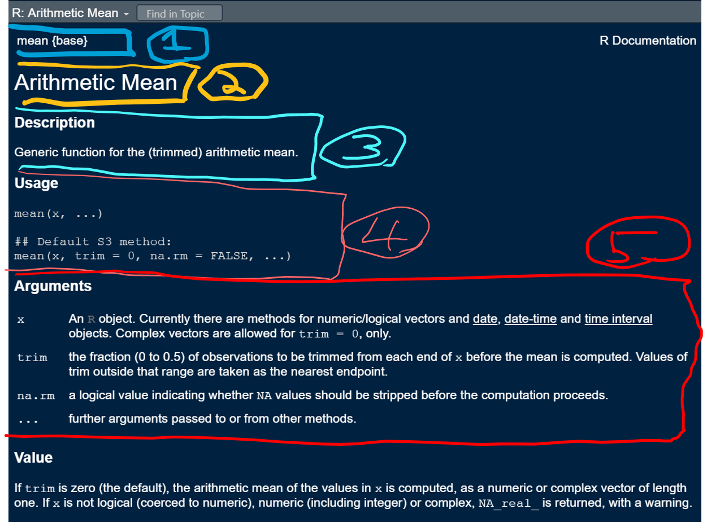

R Stats Bootcamp 02
The R Language
R Stats Bootcamp 02
Objectives
Example script, comments, help, pseudocode
Math operators
Logical Boolean operators
Regarding “base R” and the Tidyverse
Practice exercises
Example script, comments, help, pseudocode
- Demo: The concept and purpose of a
script
Tips:
Work through bootcamp by coding
Type your own code
Document code with comments
Example script
Download and open this in RStudio:
## HEADER ####
## Who: <YOUR NAME>
## What: 2 R language basics
## Last edited: <yyyy-mm-dd format)
####Contents > organisation
## CONTENTS ####
## 2 Example script, help, pseudocode
## 3 Math operators
## ...Code chunks
NB syntax of comment
## 2 Example script... pseudocode ####The
##and####make it a chunk!Also navigation
Help
# Display help page for the function mean
help(mean)Help

Anatomy of help pages
# Help for mean()
help(mean)Pseudocode
Tell it to the duck!
Break problem down into smaller chunks
Helps with understanding
Give example
Math operators
R math “syntax” works like any calculator
+, -, *, /, ^, etc.
# Add with "+"
2 + 5
# Subtract with "-"
10 - 15Order of operation
# Try this
4 + 2 * 3
# Order control - same
4 + (2 * 3)
# Order control - different...
(4 + 2) * 3Use of spaces
Spaces don’t matter, but style…
# Try this
6+10 # no spaces
7 -5 # uneven spaces
1.6 / 2.3 # large spaces
16 * 3 # exactly 1 space
# exactly 1 space probably best...Logical Boolean operators
TRUE and FALSE
# Try this
3 > 5 # True, yes?
# 3 is compared to each element
3 < c(1, 2, 3, 4, 5, 6) Logical Boolean operators
Useful booleans
# Try this
x <- c(21, 3, 5, 6, 22)
x
x[x > 20]Regarding “base R” and Tidyverse
"R is rapidly devolving into two mutually unintelligible dialects..."
"I, as a seasoned R programmer, cannot read Tidy code..."